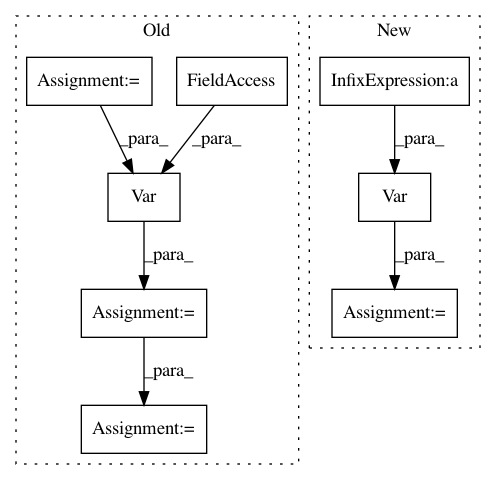

3f32776f0f58c961a1ad625f3e5e34ce31a9ebbb,examples/stochastic_volatility.py,,,#,7
Before Change
gam = Var("gam", Normal(-5., 3.**-2))
k = Var("k", Uniform(0,1), testval = .95)
tau, ltau = model.TransformedVar(
"tau", Tpos(10,.05,.05),
transform = exp, logjacobian = lambda x: x, testval = -2.3)
lvol = Var("lvol", timeseries.AR1(k, tau**-2), shape = n)
rtau = exp((lvol+gam)*-2.)
lreturns = Data(returns, Normal(0, rtau))
//fitting
start = find_MAP(model, vars = [lvol])
start = find_MAP(model,start, vars = [gam, k])
H = model.d2logpc()
def hessian(q, tau_scale):
After Change
"sd", Exponential(1./.02),
transform = exp, logjacobian = lambda x: x, testval = -2.3)
nu = Var("nu", Exponential(1./10))
lvol = Var("lvol", timeseries.RW(sd**-2), shape = n)
lreturns = Data(returns, T(nu, lam = exp(-2*lvol)))
In pattern: SUPERPATTERN
Frequency: 3
Non-data size: 8
Instances
Project Name: pymc-devs/pymc3
Commit Name: 3f32776f0f58c961a1ad625f3e5e34ce31a9ebbb
Time: 2013-03-15
Author: jsalvatier@gmail.com
File Name: examples/stochastic_volatility.py
Class Name:
Method Name:
Project Name: jonathf/chaospy
Commit Name: f47485cc4a21fb18564ede7ab0cc9001dbd0f1d9
Time: 2020-06-10
Author: jonathf@gmail.com
File Name: chaospy/descriptives/sensitivity/total.py
Class Name:
Method Name: Sens_t
Project Name: jonathf/chaospy
Commit Name: f47485cc4a21fb18564ede7ab0cc9001dbd0f1d9
Time: 2020-06-10
Author: jonathf@gmail.com
File Name: chaospy/descriptives/sensitivity/main.py
Class Name:
Method Name: Sens_m